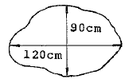
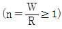
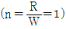
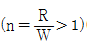
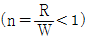
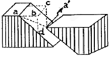
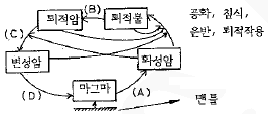

화약취급기능사 (2011-10-09 기출문제)
1과목: 화약 및 발파
1. 노천발파를 위한 경사천공의 장점으로 옳지 않은 것은?
- 발파공의 직선성 유지 용이
- 노순한 암석의 자유면 보호
- 자유면 반대방향의 후면 파괴 감소
- 1자유면에서의 문제성 감소
(정답률: 알수없음)

2. 다음 그림과 같은 암체를 천공법을 이용하여 소할발파하고자 한다. 장약량은 얼마나 하여야 하는가? (단, 발파계수 C=0.01)

- 20g
- 36g
- 81g
- 144g
(정답률: 80%)
3. 전기발파 결선법 중 병렬식 결선법의 장점으로 옳지 않은 것은?
- 대형발파에 이용된다.
- 전기뇌관의 저항이 조금씩 달라도 큰 문제가 없다.
- 전원에 동력선, 전동선을 이용할 수 있다.
- 결선이 틀리지 않고 불발시 조사하기 쉽다.
(정답률: 알수없음)
4. 다음 중 화공품에 속하지 않는 것은?
- 도화선
- 미진동파쇄기
- 도폭선
- 면약
(정답률: 80%)
5. 폭약은 폭발하였지만 폭약의 파괴량이 극히 적거나 전연파괴가 일어나지 않고 폭발가스만이 균열층을 통해서 새어나가는 현상을 무엇이라 하는가?
- 시압현상
- 유폭현상
- 소결현상
- 공발현상
(정답률: 75%)
6. 다음 중 발파 진동의 감소 대책으로 옳지 않은 것은?
- 지발발파를 실시한다.
- 방진구를 설치한다.
- 자유면을 더 많이 확보한다.
- 방음벽을 설치한다.
(정답률: 60%)
7. 화약류의 타격감도를 확인하기 위한 낙추시험에서 임계폭점은 폭발율 몇 %의 평균높이를 의미하는가?
- 25%
- 50%
- 75%
- 100%
(정답률: 77%)
8. 폭약이 폭발할 때 자유면으로 입사하는 압력파에는 그다지 파괴되지 않아도 반사할 때의 인장파에는 많이 파괴된다. 이와 같은 현상을 무엇이라 하는가?
- 홉킨스 효과
- 노이만 효과
- 먼로 효과
- 도플러 효과
(정답률: 79%)
9. 다음 중 전기뇌관의 성능 시험법이 아닌 것은?
- 남판시험
- 둔성폭약시험
- 점화전류시험
- 연주확대시험
(정답률: 알수없음)
10. 화약류의 안정도 시험 중 내열시험에서 합격품으로 규정되는 기준은?
- 65℃에서 8분 이상의 내열시간
- 65℃에서 6분 이상의 내열시간
- 85℃에서 8분 이상의 내열시간
- 85℃에서 6분 이상의 내열시간
(정답률: 알수없음)
11. 다음 중 뇌홍을 제조하는데 사용되는 주원료는?
- 옥분(C)
- 유황(S)
- 수은(Hg)
- 납(Pb)
(정답률: 알수없음)
12. 공의 지름이 45mm가 되도록 천공을 하고 약경 17mm의 정밀폭약 1호를 사용하여 발파작업을 하려 한다. 디커플링지수(Decoupling index)는 얼마인가?
- 2.65
- 2.⑤
- 1.88
- 0.37
(정답률: 70%)
13. 다음 중 폭약계수(e)의 값이 가장 작은 폭약은?
- NG 93% 스트렝스 다이나마이트
- 카알릿(carlit)
- 질산암모늄 다이나미이트
- 탄광용 질산암모늄 폭약
(정답률: 알수없음)
14. 암반분류법인 RMR 분류법의 구성 요소에 해당하지 않는 것은?
- 암석으 전단강도
- 불연속면 간격
- 암질지수(RQD)
- 지하수 상태
(정답률: 70%)
15. 비전기식 뇌관에 대한 설명으로 옳지 않은 것은?
- 점화 단차를 무한하게 할 수 있다.
- 작업이 신속하고 정확하다.
- 회로 시험기로 결선의 확인이 용이하다.
- 미주전류에 안전하고, 충격에 강하다.
(정답률: 67%)
16. 구조물에 대한 발파 해체 공법 중 제약된 공간, 특히 도심지에서 적용할 수 있는 것으로 구조물 외벽을 중심부를 끌어당기며 붕락시키는 공법은?
- 전도 공법
- 내파 공법
- 단축붕괴 공법
- 상부붕락 공법
(정답률: 54%)
17. 어떤 흙의 자연 함수비가 그 흙의 액성 한계보다 크다면 그 흙의 상태는?
- 소성상태
- 액체상태
- 반고체상태
- 고체상태
(정답률: 알수없음)
18. 다음의 조건에서 폭약의 선택이 가장 올바른 것은?
- 수분이 있는 곳에서는 내열성 폭약을 사용한다.
- 장공발파에는 비중이 큰 폭약을 사용한다.
- 굳은 암석에는 동적효과가 적은 폭약을 사용한다.
- 강도가 큰 암석에는 에너지가 큰 폭약을 사용한다.
(정답률: 알수없음)
19. 다음 중 뇌관의 첨장약으로 사용되지 않는 것은?
- 테트릴(Tetryl)
- 헥소겐(Hexogen)
- 카알릿(Carlit)
- 펜트리트(Pentrite)
(정답률: 70%)
20. 다음 중 표준 장약을 나타내는 것은? (단, n:누두지수, R:누두공의 반지름, W:최소저항선)




(정답률: 80%)
2과목: 화약류 안전관리 관계 법규
21. 폭약을 발파공에 장전한 후 전색물로 발파공을 메워 틈새없이 완전 전색하였다면 전색계수 (d)는 일반적으로 얼마인가?
- d=0.5
- d=1.0
- d=1.25
- d=1.5
(정답률: 알수없음)
22. 다음 중 계단식 발파의 장점으로 옳지 않은 것은?
- 계획적인 발파가 가능하여 대규모 발파에 유리하다.
- 장공발파에 값이 싼 폭약을 사용할 수 있다.
- 발파설계가 단순하며, 작업 능률이 높다.
- 날씨나 계절변화에 영향을 받지 않는다.
(정답률: 알수없음)
23. 다음 중 질산암모늄 폭약의 예강제로 사용되지 않는 것은?
- ONN
- TNT
- 니트로글리세린
- 옥분
(정답률: 47%)
24. 저항 1.2Ω의 전기뇌관 10개를 직렬결선하여 제발시키기 위한 필요 전압은 얼마인가? (단, 발파모선의 저항은 0.01Ω/m, 발파모선의 총연장 200m, 발파기의 내부 저항은 0, 소요 전류는 1A로 한다.)
- 8V
- 14V
- 29V
- 34V
(정답률: 64%)
25. 다음 중 니트로글리콜(Ng)에 대한 설명으로 옳은 것은?
- 강도가 니트로글리세린보다 예민하다.
- 니트로셀롤로오스와 혼합하면 -30℃에서도 동결하지 않는다.
- 순수한 것은 무색이나 공업용은 담황색으로 유동성이 좋다.
- 뇌관의 기폭에는 둔감하다.
(정답률: 67%)
26. 화약류의 취급에 대한 설명으로 가장 옳지 않은 것은?
- 사용하다가 남은 화약류는 즉시 폐기처리 할 것
- 화약·폭약과 화공품은 각각 다른 용기에 넣어 취급할 것
- 굳어진 다이나마이트는 손으로 주물러서 부드럽게 할 것
- 낙뢰의 위험이 있는 때에는 전기뇌관에 관계되는 작업을 하지 아니할 것
(정답률: 알수없음)
27. 화약류 사용자가 비치하여야 하는 화학류 출납부는 그 기입을 완료한 날로부터 몇 년간 보존하여야 하는가?
- 1년
- 2년
- 3년
- 4년
(정답률: 알수없음)
28. 일시적인 토목공사를 하거나 그 밖의 일정한 기간의 공사를 하는 사람이 그 공사에 사용하기 위하여 화학류를 저장하고자 하는 때에 한하여 설치할 수 있는 화약류저장소는?
- 간이저장소
- 2급저장소
- 3급저장소
- 수중저장소
(정답률: 알수없음)
29. 화약류 양수허가의 유효기간에 대한 설명으로 옳은 것은?
- 6개월을 초과할 수 없다.
- 1년을 초과할 수 없다.
- 2년을 초과할 수 없다.
- 3을 초과할 수 없다.
(정답률: 91%)
30. 화약류관리보안책임자 면허를 반드시 취소해야 하는 경우에 해당하지 않는 것은?
- 국가기술자격법에 의하여 자격이 취소된 때
- 면허를 다른 사람에게 빌려준 때
- 공공의 안녕질서를 해칠 염려가 있다고 믿을 만한 상당한 이유가 있는 때
- 속임수를 쓰거나 그 밖의 옳지 못한 방법으로 면허를 받은 사실이 드러난 때
(정답률: 80%)
31. 화약류저장소 주위에 간이흙둑을 설치하는 경우 그 설치기준으로 옳지 않은 것은?
- 간이흙둑의 경사는 45도 이하로 하여야 한다.
- 간이흙둑의 높이는 3급저장소에 있어서는 지붕의 높이 이상으로 하여야 한다.
- 정상의 폭은 60cm이상으로 하여야 한다.
- 정상은 빗물이 스며들지 아니하도록 판자 등으로 씌우거나 잔디를 입혀야 한다.
(정답률: 84%)
32. 운반신고를 하지 아니하고 운반할 수 있는 화약류의 수량으로 옳은 것은?
- 총용뇌관 100만개
- 도폭선 1500m
- 화약 50kg
- 미진동파쇄기 1만개
(정답률: 60%)
33. 화약류저장소의 위치·구조 및 설비를 허가 없이 임의로 변경하였을 경우에 그 벌칙은?
- 5년 이하의 징역 또는 1천만원 이하의 벌금
- 3년 이하의 징역 또는 700만원 이하의 벌금
- 2년 이하의 징역 또는 500만원 이하의 벌금
- 300만원 이하의 과태료
(정답률: 알수없음)
34. 다음 중 보안물건의 구분으로 옳지 않은 것은?
- 제1종 보안물건 : 학교
- 제2종 보안물건 : 공원
- 제3종 보안물건 : 발전소
- 제4종 보안물건 : 석유저장시설
(정답률: 50%)
35. 화약류 안정도시험을 실시함 사람은 시험결과를 누구에게 보고하여야 하는가?
- 행정안전부장관
- 경찰청장
- 지방경찰청장
- 경찰서장
(정답률: 알수없음)
36. 화학조성에 따른 화성암의 분류 중 SiO2의 함유량이 45%(Wt%) 미만인 것을 무엇이라 하는가?
- 산성암
- 중성암
- 염기성암
- 초염기성암
(정답률: 55%)
37. 일반적인 화성암이 갖는 대표적인 구조와 조작에 해당하지 않는 것은?
- 압쇄구조
- 유상구조
- 반상조직
- 유리질조직
(정답률: 73%)
38. 다음 중 단층의 발견이 쉽고 전이의 양까지도 알아낼 수 있는 암층은?
- 퇴적암
- 변성암
- 화성암
- 심성암
(정답률: 90%)
39. 다음 그림에서 단층의 실이동 거리를 나타낸 것은?

- aa
- bd
- bc
- ad
(정답률: 알수없음)
40. 화학적 퇴적물 중 칠레 초석의 화학 조성은 무엇인가?
- CaCO3
- NaCl
- NaNO3
- CaSO4
(정답률: 알수없음)
3과목: 암석 및 지질
41. 경사된 단층면에서 상반이 위로 올라간 단층으로 주로 압축력의 작용으로 생긴 단층은?
- 수직단층
- 주향이동단층
- 역단층
- 정단층
(정답률: 79%)
42. 다음 중 유기적 퇴적암이 아닌 것은?
- 석탄
- 석회암
- 각력암
- 규조토
(정답률: 80%)
43. 변성작용을 일으키는 중요한 요인 2가지는 무엇인가?
- 풍화작용, 속성작용
- 온도, 압력
- 결정작용, 침식작용
- 융기, 침강작용
(정답률: 86%)
44. 규장질(felsic) 암석에 대한 설명으로 옳지 않은 것은?
- 일반적으로 밝은 색을 띤다.
- 실리카(SiO2)의 함량은 높은 편이다.
- 마그네슘과 철의 함량이 높은 편이다.
- 대표적인 암석으로 화강암을 들 수 있다.
(정답률: 알수없음)
45. 다음 중 지층의 주향과 경사를 측정하는데 쓰이는 것은?
- 토탈스테이션
- 아네모미터
- 신틸로미터
- 클리노미터
(정답률: 84%)
46. 다음 중 화산분출 때 분출된 입자들로 만들어진 화성쇄설암에 해당하는 것은?
- 응회암
- 석회암
- 역암
- 규조토
(정답률: 87%)
47. 정장석이 화학적 풍화작용을 받으면 어떤 광물로 변하는가?
- 석회석
- 고령토
- 형석
- 인회석
(정답률: 알수없음)
48. 화학성분은 SiO2이고, 규장질 암에는 부피로 전체의 30%를 차지하나 중성 및 고철질 암에는 극히 적거나 없는 광물은?
- 장석
- 흑운모
- 석영
- 각성석
(정답률: 알수없음)
49. 다음 중 염리를 보이는 변성암에 해당하지 않는 것은?
- 점판암
- 편암
- 편마암
- 규암
(정답률: 40%)
50. 지각을 구성하고 있는 8대 원소에 포함되지 않는 것은?
- 수소(H)
- 나트륨(Na)
- 알루미늄(Al)
- 철(Fe)
(정답률: 알수없음)
51. 습곡을 이룬 지층의 단면에서 구부러진 모양의 정상부 명칭과 가장 낮은 부분의 명칭이 순서대로 바르게 연결된 것은?
- 배사, 향사
- 향사, 배사
- 윙(wing), 림(limb)
- 림(limb), 윙(wing)
(정답률: 92%)
52. 지름 2mm 이상의 자갈들 사이에 모래, 점토 등이 채워져서 고결되어 있는 암석은?
- 역암
- 사암
- 실트스톤
- 셰일
(정답률: 42%)
53. 다음 중 셰일이 분포하는 지역에 화강암이나 관입하면서 관입암 주위의 셰일에 접촉변성작용이 일어나 생성된 변성암은?
- 혼펠스
- 슬레이트
- 편마암
- 천매암
(정답률: 알수없음)
54. 결정질 석회암이라고도 하며, 묽은 염산에 넣으면 거품을 내고 못으로 그으면 부드럽게 긁히는 암석은?
- 천매암
- 대리암
- 점판암
- 섬록암
(정답률: 알수없음)
55. 부정합면이 발견되지 않고 성층면으로 대표되나 그 사이에 큰 결층이 있는 부정합은?
- 준정합
- 비정합
- 사교부정합
- 난정합
(정답률: 알수없음)
56. 다음 중 화성암을 구성하는 유색광물이 아닌 것은?
- 강람석
- 휘석
- 각섬석
- 정장석
(정답률: 알수없음)
57. 한반도에서 지질시대 중 가장 강력한 조산운동인 대보조산운동이 있었던 시기는?
- 쥐라기
- 트라이아스기
- 폐름기
- 석탄기
(정답률: 알수없음)
58. 다음 그림은 암석의 윤회과정을 나타낸 것이다. A, B, C, D에 해당되는 작용은 무엇인가?

- A-결정작용, B-고화작용, C-용융작용, D-변성작용
- A-결정작용, B-고화작용, C-변성작용, D-용융작용
- A-용융작용, B-변성작용, C-결정작용, D-고화작용
- A-용융작용, B-고화작용, C-변성작용, D-결정작용
(정답률: 알수없음)
59. 화성암에서 용암에 들어 있던 휘발 성분이 분리되면서 굳어져 기공이 남아 있는 구조인 다공질 구조를 관찰할 수 있는 암석은?
- 화강암
- 현무암
- 반려암
- 성록암
(정답률: 알수없음)
60. 다음 중 지하 깊은 곳의 화강암이 침식을 받아 지표에 노출됨에 따라 작용하던 상부하중이 제거되면서 형성되는 절리는 무엇인가?
- 주상 절리
- 판상 절리
- 수직 절리
- 단층 절리
(정답률: 알수없음)